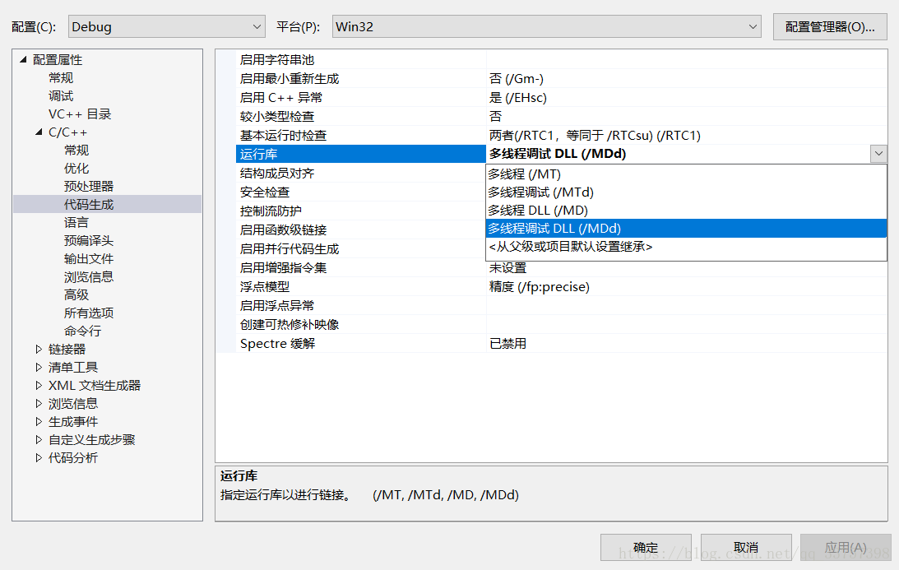
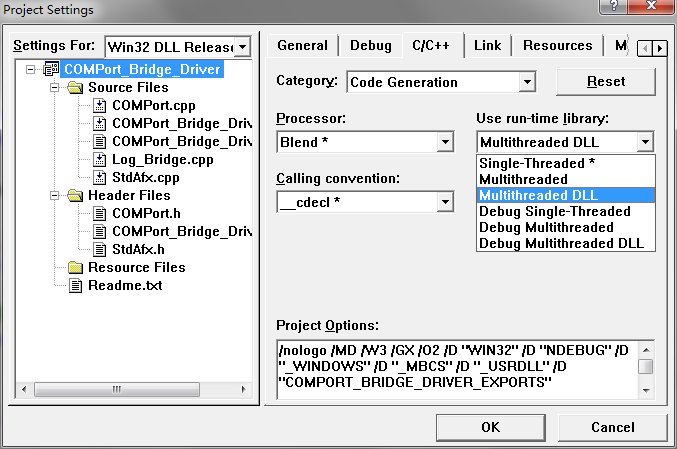

VC++设置编译选项
VC运行时库（/MD、/MT等）
VC项目属性→配置属性→C/C++→代码生成Code Generation→运行时库 可以采用的方式有：多线程(/MT)、多线程调试(/MTd)、多线程DLL(/MD)、多线程调试DLL(/MDd)、单线程(/ML)、单线程调试(/MLd)。
Reusable Library |
Switch |
Library |
Macro(s) Defined |
Single Threaded |
/ML |
LIBC |
(none) |
Static MultiThread |
/MT |
LIBCMT |
_MT |
Dynamic Link (DLL) |
/MD |
MSVCRT |
_MT and _DLL |
Debug Single Threaded |
/MLd |
LIBCD |
_DEBUG |
Debug Static MultiThread |
/MTd |
LIBCMTD |
_DEBUG and _MT |
Debug Dynamic Link (DLL) |
/MDd |
MSVCRTD |
_DEBUG, _MT, and _DLL |
在调试模式下，使用调试运行库：多线程调试（/MTd）、多线程调试DLL（/MDd）
在发布模式下，使用发布运行库：多线程（/MT）、多线程DLL（/MD）
静态链接：多线程（/MT）、多线程调试（/MTd）
动态链接：多线程DLL（/MD）、多线程调试DLL（/MDd）
动态链接为D，静态链接为T。两者的区别在于，静态链接将程序所依赖的运行库集成到了可执行文件中，可执行文件运行时不再需要运行库；动态链接没有把程序所依赖的运行库集成到可执行文件中，可执行文件运行时需要运行库。由于静态链接将程序所依赖的运行库集成到了可执行文件中，一般情况下，生成的可执行文件的大小大于动态链接生成的
对这四种运行库的选在位于VS的项目属性-》C/C++-》代码生成-》运行库：

在VC6中设置方式：Project/Setting/ C/C++ /Code Generation

其中以小写“d”结尾的选项表示的DEBUG版本的，没有“d”的为RELEASE版本。大型项目中必须要求所有组件和第三方库的运行时库是统一的，否则将会出现LNK2005井喷。
单线程运行时库选项/ML和/MLd在VS2003以后就被废了。
/MT和/MTd表示采用多线程CRT库的静态lib版本。该选项会在编译时将运行时库以静态lib的形式完全嵌入。该选项生成的可执行文件运行时不需要运行时库dll的参加，会获得轻微的性能提升，但最终生成的二进制代码因链入庞大的运行时库实现而变得非常臃肿。当某项目以静态链接库的形式嵌入到多个项目，则可能造成运行时库的内存管理有多份，最终将导致致命的“Invalid Address specified to RtlValidateHeap”问题。另外托管C++和CLI中不再支持/MT和/MTd选项。
/MD和/MDd表示采用多线程CRT库的动态dll版本，会使应用程序使用运行时库特定版本的多线程DLL。链接时将按照传统VC链接dll的方式将运行时库MSVCRxx.DLL的导入库MSVCRT.lib链接，在运行时要求安装了相应版本的VC运行时库可再发行组件包（当然把这些运行时库dll放在应用程序目录下也是可以的）。 因/MD和/MDd方式不会将运行时库链接到可执行文件内部，可有效减少可执行文件尺寸。当多项目以MD方式运作时，其内部会采用同一个堆，内存管理将被简化，跨模块内存管理问题也能得到缓解。
结论：/MD和/MDd将是潮流所趋，/ML和/MLd方式请及时放弃，/MT和/MTd在非必要时最好也不要采用了。
LNK2005井喷即"LINK : warning LNK4098: 默认库“LIBCMTD”与其他库的使用冲突；请使用 /NODEFAULTLIB:library"的解决办法
在VC6中错误提示如下：
msvcrt.lib(MSVCRT.dll) : error LNK2005: _free already defined in LIBCMT.lib(free.obj)
msvcrt.lib(MSVCRT.dll) : error LNK2005: _malloc already defined in LIBCMT.lib(malloc.obj)
msvcrt.lib(MSVCRT.dll) : error LNK2005: __errno already defined in LIBCMT.lib(dosmap.obj)
在VC6+中错误提示如下：
错误 1 error LNK2005: _free 已经在 libcmtd.lib(dbgheap.obj) 中定义 MSVCRT.lib
错误 2 error LNK2005: _malloc 已经在 libcmtd.lib(dbgheap.obj) 中定义 MSVCRT.lib
以前经常遇到这个警告信息，因为运行并没有什么问题，所以也没深究。但是耿耿于怀那个“ 0 个错误，0 个警告”的成功提示，在网上搜了一下。原来问题出在默认库的引用选择上。
VS2008，项目——属性——配置属性——C/C++——代码生成：他有/MT，/MTd，/Md，/MDd四个选项，你必须让所有使用的库都使用相同的配置，否则就会有相应的提示，甚至可能会出现无法解析的函数。有时我们使用的库不是自己可以控制的，那么就只能把工程属性设置成河你使用的库相同的选项。
如果有一堆的重定义错误发生在同一个lib中，而且跟它冲突的也是同一个lib，那么这个两个lib的功能应该是一样的，可以2选一，只要在“忽略特定的库”内填入需要忽略的库。
项目属性-配置属性-链接器-输入-忽略特定的库：libcmtd.lib
项目属性-配置属性-常规-MFC的使用：在共享 DLL 中使用 MFC
MSVCRT.lib 和libcmt.lib的冲突还是比较常见的。
从错误信息可以看出是msvcrt.lib和libcmt.lib库中重复定义了__isctype等符号。为什么会出现这样的问题呢？这就要从这两个库的作用说起了。
msvcrt.lib是VC中的Multithreaded DLL 版本的C运行时库，而libcmt.lib是Multithreaded的运行时库。在同一个项目中，所有的源文件必须链接相同的C运行时库。如果某一文 件用了Multithreaded DLL版本，而其他文件用了Single-Threaded或者Multithreaded版本的库，也就是说用了不同的库，就会导致这个警告的出现。
告警信息的意思我们明白之后，就要找造成这个问题的原因了。在项目设置中我们可以看到当前项目使用的是Multithreaded非DLL版本的运 行时库，这说明项目中还有其他文件用到了不是这个版本的运行时库。很显然，就是openssl的静态库。查看openssl中ms下的nt.mak，我们 可以发现静态库版本中openssl使用编译开关/MD进行编译的，也就是说openssl静态库是默认用的Multithreaded DLL 版本的C运行时库。
原因找到了。那么解决方法，很明显有两个。总之就是将两个项目的运行时库统一。
简单的方式就是将项目的动态库修改为使用Multithreaded DLL 版本的C运行时库即可。 某些情况下你的项目可能不能改变当前的运行时库，你可以将openssl的nt.mak中的/MD开关修改为/MT然后重新编译openssl静态库就可以了。
默认库“library”与其他库的使用冲突；请使用 /NODEFAULTLIB:library LNK4098 的解决办法
默认库“library”与其他库的使用冲突；请使用 /NODEFAULTLIB:library LNK4098 的解决办法
VC6中错误提示为：LINK : warning LNK4098: defaultlib "LIBCMT" conflicts with use of other libs; use /NODEFAULTLIB:library
您试图与不兼容的库链接。
注意
运行时库现在包含可防止混合不同类型的指令。如果试图在同一个程序中使用不同类型的运行 时库或使用调试和非调试版本的运行时库，则将收到此警告。例如，如 果编译一个文件以使用一种运行时库，而编译另一个文件以使用另一种运行时库（例如单线程运行时库对多线程运行时库），并试图链接它们，则将得到此警告。应 将所有源文件编译为使用同一个运行时库。有关更多信息，请参见使用运行时库（/MD、/MT 和 /LD）编译器选项。
可以 使用链接器的 /VERBOSE:LIB 开关来确定链接器搜索的库。如果收到 LNK4098，并想创建使用如单线程、非调试运行时库的可执行文件，请使用 /VERBOSE:LIB 选项确定链接器搜索的库。链接器作为搜索的库输出的应是 LIBC.lib，而非 LIBCMT.lib、MSVCRT.lib、LIBCD.lib、LIBCMTD.lib 和 MSVCRTD.lib。对每个要忽略的库可以使用 /NODEFAULTLIB，以通知链接器忽略错误的运行时库。
下表显示根据要使用的运行时库应忽略的库。
若要使用第一行运行时库 请忽略第2行的这些库
单线程 (libc.lib)
libcmt.lib、msvcrt.lib、libcd.lib、libcmtd.lib、msvcrtd.lib
多线程(libcmt.lib)
libc.lib、msvcrt.lib、libcd.lib、libcmtd.lib、msvcrtd.lib
使用 DLL 的多线程 (msvcrt.lib)
libc.lib、libcmt.lib、libcd.lib、libcmtd.lib、msvcrtd.lib
调试单线程(libcd.lib)
libc.lib、libcmt.lib、msvcrt.lib、libcmtd.lib、msvcrtd.lib
调试多线程(libcmtd.lib)
libc.lib、libcmt.lib、msvcrt.lib、libcd.lib、msvcrtd.lib
使用 DLL 的调试多线程 (msvcrtd.lib)
libc.lib、libcmt.lib、msvcrt.lib、libcd.lib、libcmtd.lib
例如，如果收到此警告，并希望创建使用非调试、单线程版本的运行时库的可执行文件，可以将下列选项与链接器一起使用：
/NODEFAULTLIB:libcmt.lib /NODEFAULTLIB:msvcrt.lib /NODEFAULTLIB:libcd.lib /NODEFAULTLIB:libcmtd.lib /NODEFAULTLIB:msvcrtd.lib